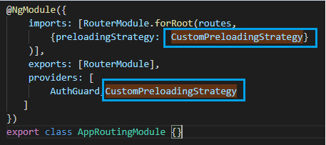
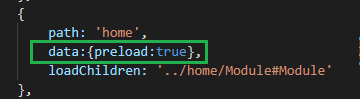

lazyload works!
{{time}}
懒加载：loadChildren 这里使用到了懒加载LoadChildren属性。
这里没有将对应的模块导入到AppModule中，而是通过loadChildren属性，告诉Angular路由依据loadChildren属性配置的路径去加载对应的模块。
这就是模块懒加载功能的具体应用，当用户访问 /xxx/** 路径的时候，才会加载对应的模块，这样处理好的处是能够够节省资源开销，只有在用户需要的时候通过点击路由之后再加载对应的模块, 这减少了应用启动时加载资源的大小。
loadChildren的属性值由三部分组成：
需要导入模块的相对路径
#分隔符
导出模块类的名称
Example // 惰性加载的语法：[loadChildren] 后面紧跟着一个字符串，它指向模块的相对路径，然后是一个 #，然后是该模块的类名
path: 'lazyload', loadChildren: './examples/lazyload/lazyload.module#LazyloadModule'
preload works!
preload的具体实现集成在了preload.route.ts
把CustomPreloadingStrategy引入到app.routing.ts里，
对于需要预加载的模块在路由下面设置preload=true
